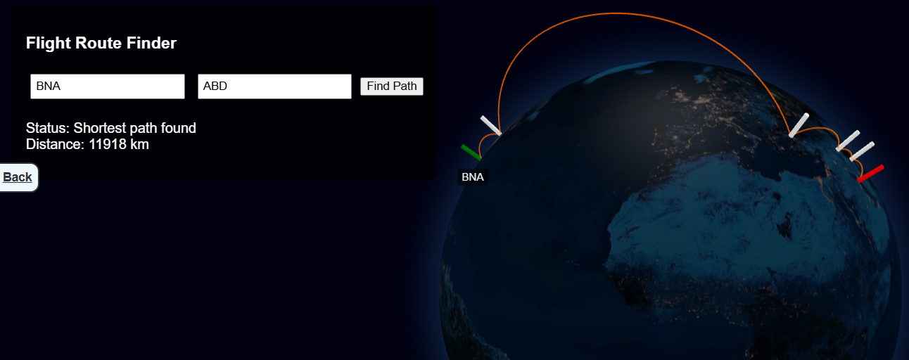

Airport Visualizer
Initially, I created the C++ code for this program in my Advanced Data Structures class as a Junior to learn and apply Dijkstra's Algorithm as well as better understand object oriented programming. As a senior, I realized I could apply my passion for showcasing data to that program and created Airport Visualizer. This project serves as a bridge between high-performance computational logic and modern, interactive data visualization, proving that complex backend algorithms can be made accessible and engaging through thoughtful frontend design.
Interactive Airport Visualizer Demo
The interface features a high-resolution, interactive 3D globe that serves as the canvas for the pathfinding engine. When a user inputs a starting and ending airport code, the system doesn't just calculate a route; it visualizes the journey. Animated arcs spring to life across the globe, tracing the most efficient path calculated by the algorithm. Each node in the path is marked with distinct markers—green for the origin, white for layovers, and red for the final destination—allowing users to see exactly how the "shortest path" logic navigates through a global network of over 60,000 flight routes in real-time.
View the source code on GitHub.
Technologies Used
C++ & Standard Template Library (STL)
The "brain" of the application is written in C++. I utilized a custom-built Adjacency List data structure to represent the global flight network as a directed graph. The core logic implements Dijkstra's Algorithm to traverse thousands of nodes and edges, ensuring that the shortest path between any two airports is found with maximum efficiency.
WebAssembly (Wasm) & Emscripten
To bring the C++ engine to the web, I used the Emscripten compiler toolchain. This allowed me to compile the C++ source code into WebAssembly, enabling near-native execution speeds within the browser. This technology is what makes the instant calculation of complex routes possible without requiring a traditional backend server.
JavaScript & Globe.gl
The visual layer is powered by JavaScript and the Globe.gl library (built on Three.js). I developed a "bridge" to handle the communication between the WebAssembly memory and the browser's rendering engine. JavaScript parses the raw data returned from the C++ engine and maps it to geographic coordinates to render the 3D arcs and markers.
Data Architecture (CSV & Virtual File Systems)
The project processes large-scale datasets including Airports.csv and WeightedRoutes.csv. I implemented a Virtual File System within the WebAssembly environment to "bake" these datasets into the application, ensuring that the data is always available to the engine for high-speed lookups and graph construction.
HTML5 & CSS3
The user interface was designed with a focus on a "dark mode" aesthetic to complement the night-view globe. I used CSS for absolute-positioned UI overlays, ensuring that the flight search controls remain accessible while providing a cinematic, full-screen experience for the 3D visualization.
Credits & Data Sources
Airport Geographic Data
The airport locations, IATA codes, and coordinate data were sourced from the Airports Dataset provided by Thoudam Yoihenba via Kaggle. This dataset provided the essential latitude and longitude mapping required to project 2D airport codes onto a 3D sphere.
Global Flight Routes
The network of flight paths and connections was derived from the Airports, Airlines, and Routes Update (2024) provided by Ahmad Rafiee. This updated dataset allowed the engine to process modern flight corridors and airline connectivity.
Data Processing & Optimization
To integrate these datasets into a high-performance C++ environment, I performed extensive data cleaning and "weighting."
Distance Calculations: Using the Haversine formula, I calculated the great-circle distance between coordinates to create the "weights" for the graph edges.
I filtered and merged raw CSV files to remove null entries and "noise" (such as \N markers), resulting in the optimized WeightedRoutes.csv used by the final engine.